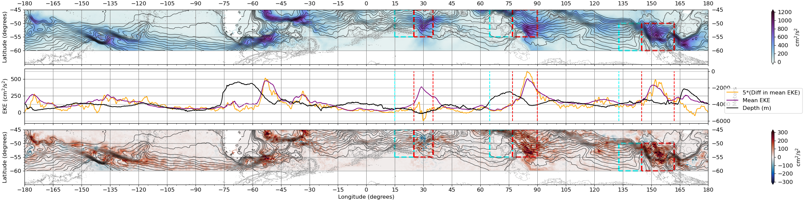

Spatial and temporal trends in Southern Ocean eddy kinetic energy.
Beginning in June of 2025, I have been researching the variability of eddy kinetic energy in the Southern Ocean, particularly focused on standing meander dynamics.

Beginning in June of 2025, I have been researching the variability of eddy kinetic energy in the Southern Ocean, particularly focused on standing meander dynamics.
